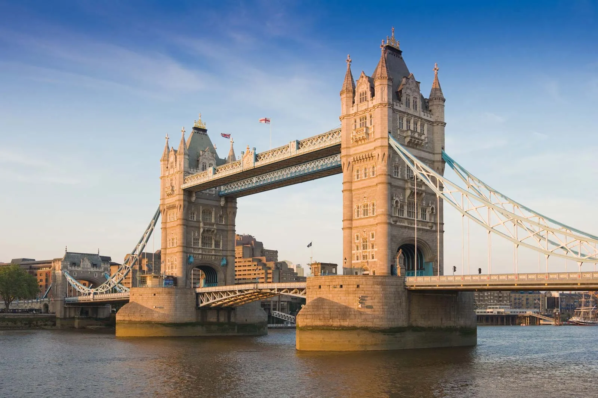

Meu Roteiro de 3 Dias
Dia 1: Ícones da Realeza
O primeiro dia foi para explorar os clássicos: assistimos à Troca da Guarda no Palácio de Buckingham.
Atualizado 3 mins atrás
Dia 2: Cultura e Mercados
Mergulhamos na cultura no British Museum e exploramos a atmosfera vibrante e alternativa de Camden Market.
Atualizado 1h atrás
Dia 3: Arte e Despedida
O último dia foi dedicado à arte de rua colorida de Shoreditch, terminando com um passeio pela margem sul do Tâmisa.
Atualizado 5h atrás